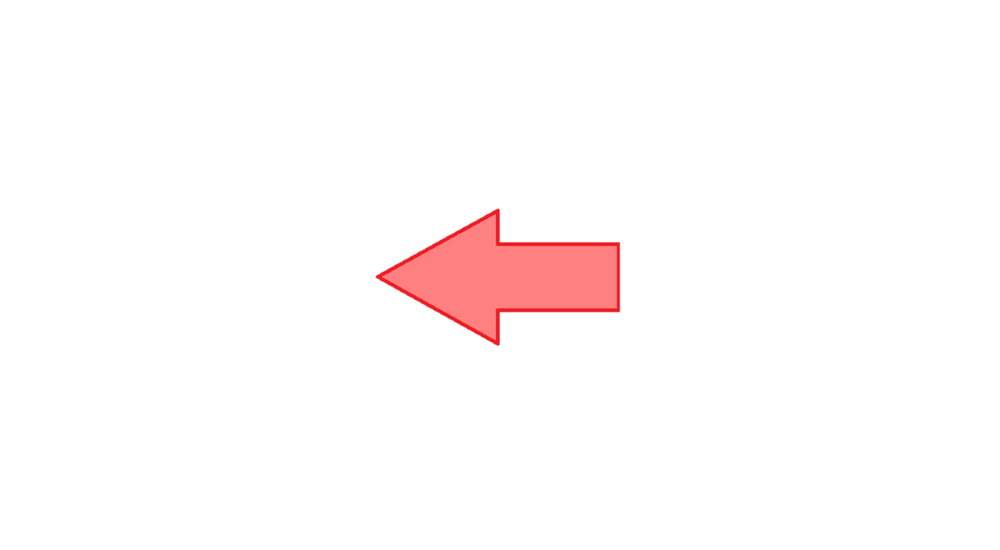

Limitele funcțiilor elementare
- Funcția constantă

- Funcția polinomială
- Funcția rațională

- Funcția radical

- Funcția exponențială

- Funcția logaritmică

- Funcția sinus

- Funcția cosinus
- Funcția tangentă
- Funcția cotangentă

- Funcția arcsinus

- Funcția arccosinus
- Funcția arctangentă
- Funcția arccotangentă
OBSERVAȚII
Funcțiile elementare au proprietatea că limita lor în orice punct al domeniului de definiție este egală cu valoarea funcției în acel punct.
